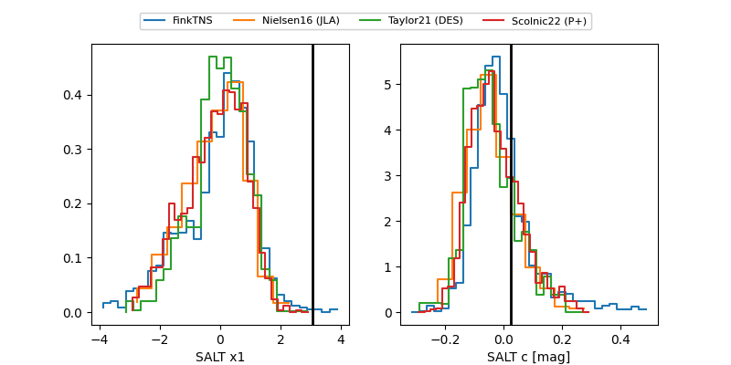

FINK: ZTF25abqicqz
Lasair: ZTF25abqicqz
ALeRCE: ZTF25abqicqz
TNS: 2025xjq
YSE: 2025xjq
ZTF25abqicqz (ztf,fink)
2025xjq (tns,yse)
ATLAS25lhg (atlas)
PS25hrh (panstarrs)
equatorial (ra, dec) = (248.2476,+36.22832)
galactic (l, b) = (58.4593,+42.63152)

last atlasc=18.77, atlaso=18.91, ps1::r=20.08, ztfg=18.80, ztfr=18.94
5 atlasc, 2 atlaso, 1 ps1::r, 2 ztfg, 2 ztfr detections